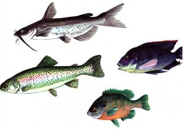
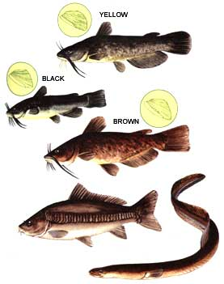

CHANNEL CATFISH (Ictalurus punctatus)
Some people are prejudiced against eating these whiskery fish, claiming that "scavengers" aren't fit table fare (I wonder how many of these same people eat pork without a second thought). But, in the southern U.S., folks know better. In fact, that well-developed regional taste for catfish pretty much supports this country's principal fish-culture industry, which is centered in the lower Mississippi valley. Over 50 million pounds of cultured catfish are sold annually . . . and perhaps 2% of that total is grown in cages.
The channel catfish is really quite a handsome creature. Young fish-up to about a foot long-are covered with round, black spots and were formerly thought to be a distinct species (called willow cats, lady cats, squealers, or fiddlers). Although the channel cat can now be caught in most waters of the United States, almost all the commercial sources of supply are located in the south central states and California.
BLUE TILAPIA (Tilapia aurea)
The many species of tilapia-originally native to the Near East and Africa, but now spread throughout the tropics-are among the world's most important food fishes. When Saint Peter and his companions cast nets into the Sea of Galilee, they were fishing mainly for tilapia, which are sometimes marketed as "Saint Peters fish". In recent years tilapia have also become important for culture in greenhouses and other heated environments . . . as well as for seasonal culture in the temperate zones.
My favorite species, the blue tilapia, is about as beautiful a fish as you could hope to raise. A male in breeding condition (which is most of the time) is suffused with iridescent blue, particularly around the head, and has brilliant crimson edges on the fins. (Blue tilapia have won more than a few prizes at aquarium shows!)
You can obtain various species of tilapia from aquarium shops, but you'll get a better price (and be sure you're not purchasing a "miniature" species) if you buy from an aquaculture dealer.
Apart from their value as food fish, tilapia can-if a few are kept in a cage with other fish-reduce the time spent in cleaning algae from the inside mesh of the cage.
RAINBOW TROUT (Salmo gairdnerrl
The American Fisheries Society currently recognizes 14 species of trout as being either native, or successfully introduced, to North America. Most of these are important as sport fish, but only the rainbow trout is widely grown for food. Able to tolerate slightly higher temperatures than most trout, it seems reasonably content in the crowded circumstances typical of intensive fish culture.
The rainbow is indigenous to the Pacific coast drainage areas of North America, but can now be encountered almost anywhere trout of any kind are found.
BLUEGILL
(Lepomis macrochirus)
The bluegill is probably the best known of the 11 sunfish species. It's always been widely distributed throughout the United States and southern Canada, and is now found almost everywhere, thanks to the "Farm Pond" programs of the 1940's. It's better suited to most aquaculture purposes than other types of sunfish, primarily because of its large size and its adaptable feeding habits.
You can distinguish bluegills from related species by glancing at the opercular flap (the small, soft tab on the rear edge of the gill cover). If the flap is short and dark blue, and not edged or spotted with a lighter color, the sunfish is probably a bluegill. Other distinctive characteristics include a dark blotch at the rear of the dorsal fin (the fin on the back) and sharply pointed pectoral fins (those just behind the gills).
Commercially available strains of "hybrid bluegills"-which are usually crosses between the bluegill and the green sunfish (Lepomis cyanellus)have been the subject of some controversy among aquaculturists. The different hybrids seem to vary in performance, but in general they grow more rapidly than does either of the parent spe. cies. They are expensive, however, and small-scale growers can't expect to produce their own hybrids.
MIRROR CARP (Cyprinus carpio)
The common carp isn't very popular in this hemisphere, although it was originally brought here as a food fish. But in Europe, Israel, China, Japan, and other countries, it has become the most domesticated of aquaculture species, almost rivaling such livestock as chickens or pigs in the many varieties available.
In North America, wild carp are found nearly everywhere that there's sufficiently warm water (except in peninsular Florida). Few of the select varieties are available in this country, but it is worth the trouble to look for the "mirror" or "Israeli" carp (it has only a few large, scattered scales). It's an even more adaptable eater than the wild type, and has a higher height-to-length ratio. If you can't locate carp stock elsewhere, you might want to contact bait dealers . . . as they sometimes sell Israeli carp as "minnows".
BROWN, BLACK, AND YELLOW BULLHEADS (genus Ictalurus)
Visually, the bullheads-with their large heads, stocky bodies, square tails, and usually sluggish movements-conform more closely to most people's conception of a catfish than does the channel cat. While bullheads are native to the eastern two thirds of the United States, they are now found in almost all parts of the country.
The differences among the three major bullhead species are not easy to distinguish, yet it's very important for the cage culturist to know which type of bullhead he or she is dealing with. In brief, a yellow bullhead (Ictalurus natolis) has whitish or yellowish barbels ("whiskers") . . . a long anal fin with 23-28 rays . . . and small serrations on the inside edge of its pectoral fin's spine (see the drawings). The brown (Ictalurus nebulosus) and black (Ictolurus melas) bullheads both have black, dark brown, or darkly spotted barbels. The brown bullhead, though, has a medium-length anal fin (with 22-24 rays) and stout serrations on the interior pectoral fin's spinal edge. The black bullhead has a distinctly short anal fin (with 16-22 rays) and a smooth, or barely serrated, pectoral fin edge.
EELS
(Anguilla rostrata)
The American eel is a "catadromous" fish. That is, its life cycle reverses that of the "anadromous" salmon, as eels live in fresh water and spawn at sea. Therefore, the controlled breeding of captive eels is for all practical purposes an impossibility. However, in many estuaries along our Atlantic coast, young eels (elvers) can be collected in numbers sufficient to supply eel-culture systems. For this reason, though an occa sional large eel will turn up in a body of water hundreds of miles inland, eel culture will probably always be a coastal enterprise.
Furthermore, eels aren't the easiest creatures to keep in cages. The young fish may slip through the mesh, while adults often become adept at crawling up and out through cracks. Their exceptional food qualities (and the fact that they have the lowest percentage of dressing loss of any fish), do make them worth the trouble, though.*
|
 |
 |
|